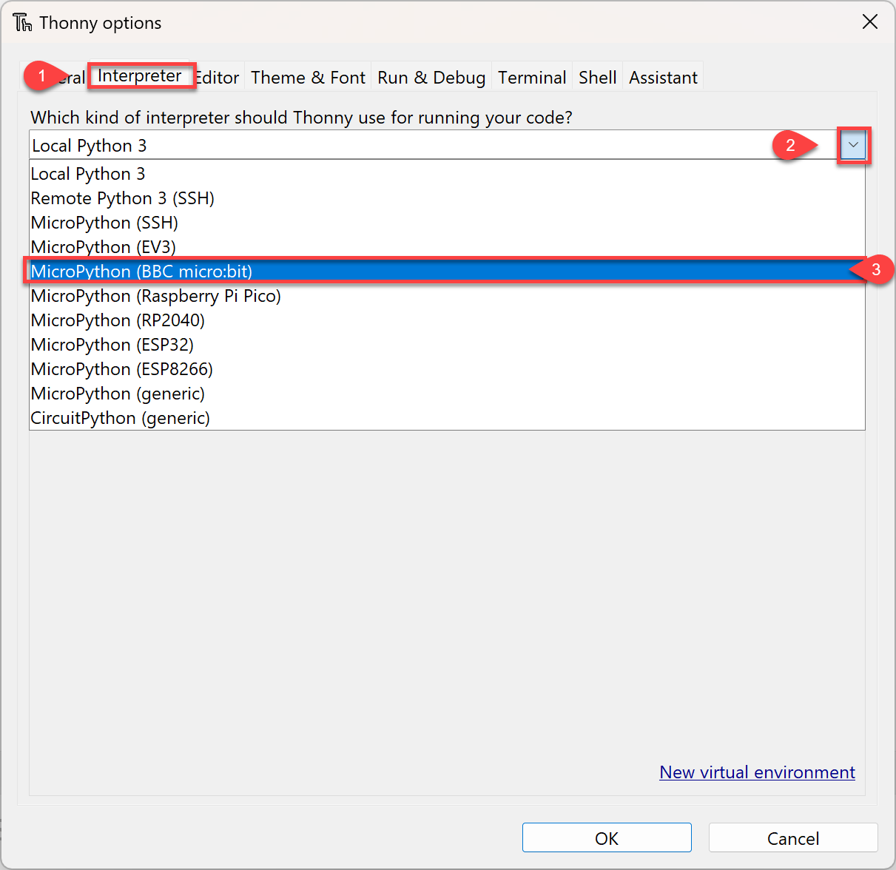
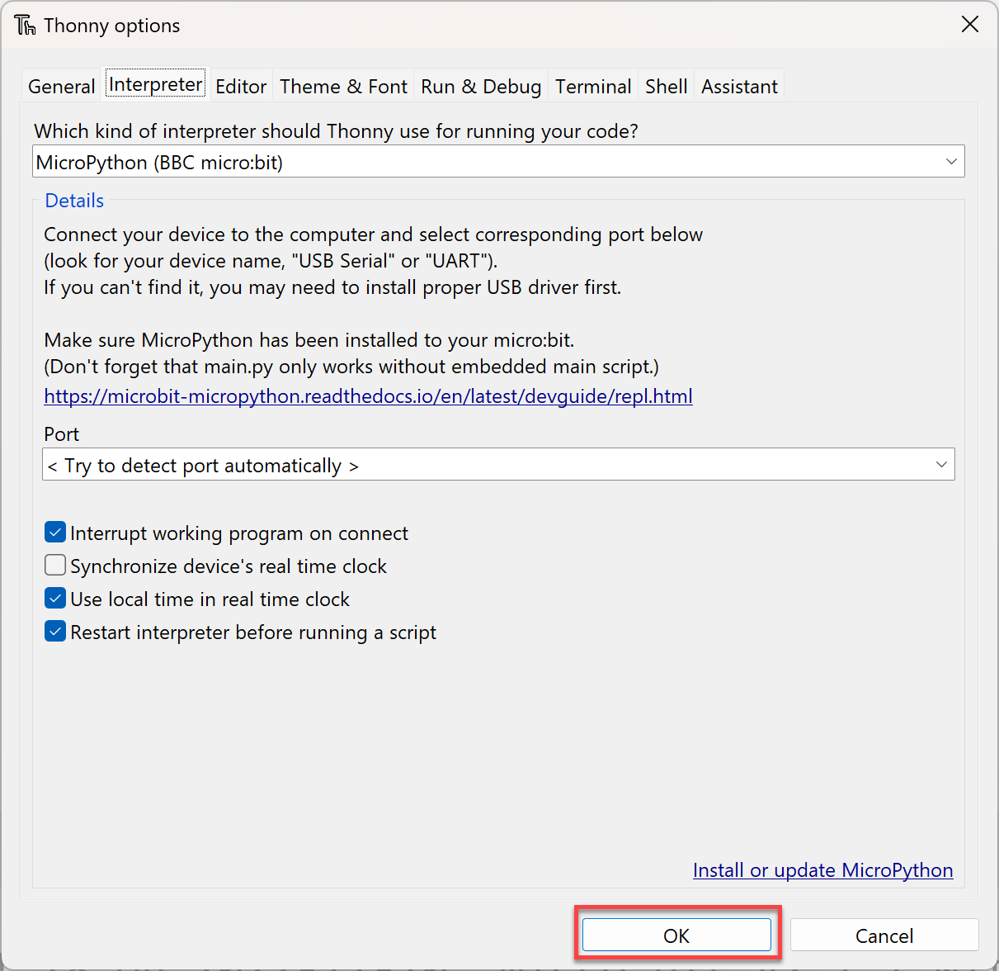
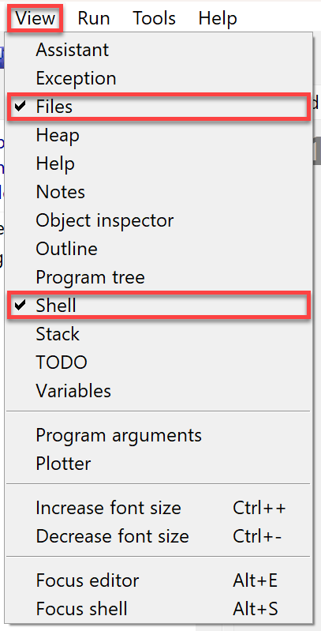
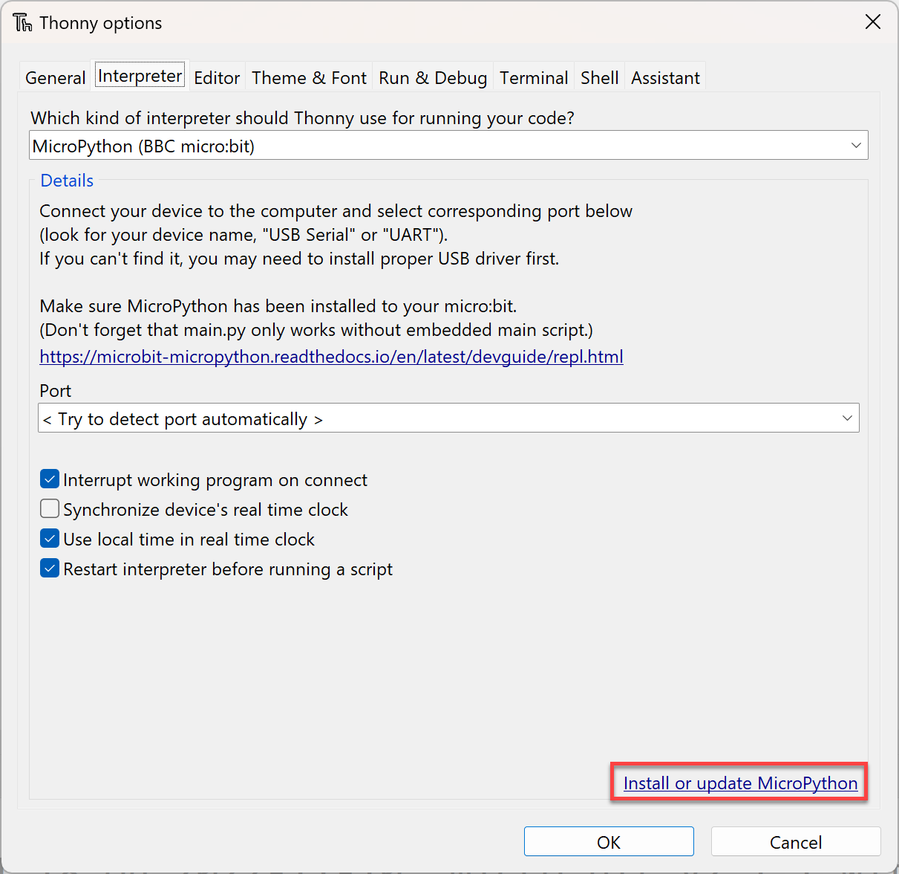
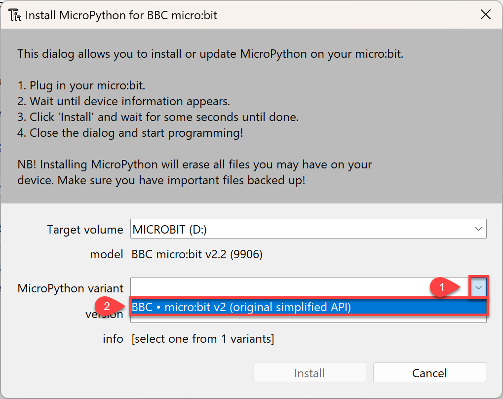
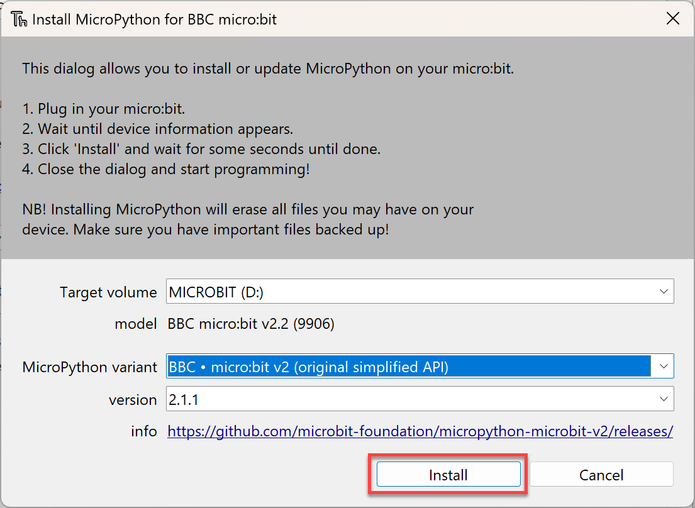
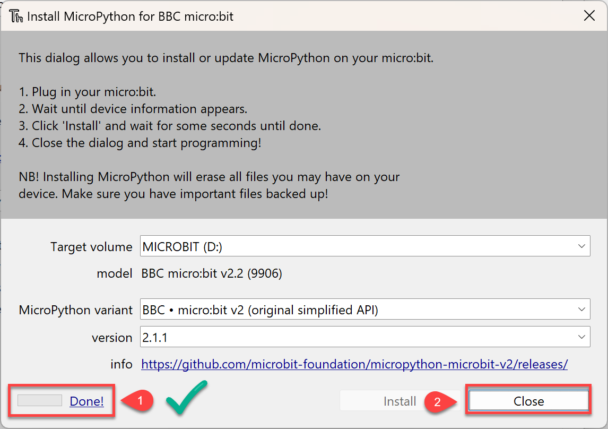
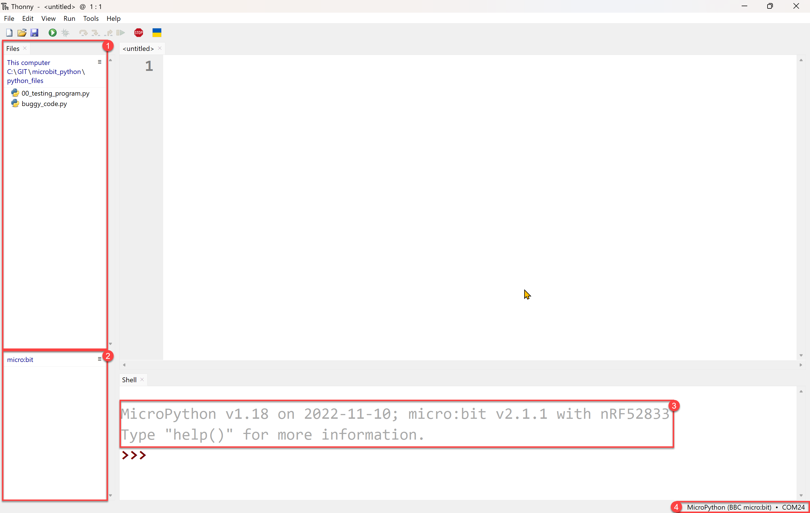

Getting Started#
During this course we will use Thonny to write MicroPython code to run on micro:bits. This section is about getting all three of these elements working together.
What is MicroPython#
MicroPython is a programming language based on Python. It is designed to run on small microcontrollers, which are small computer chips that are used in many electronic devices such as robots, sensors, and even some household appliances. Writing programs for microcontrollers is called embedding programming.
What is a micro:bit#
We will be using a educational microcontroller called a micro:bit. Micro:bits are small, pocket-sized computers that are designed to help people learn about coding and electronics. They have a variety of features, including buttons, a display, and sensors, that can be programmed to perform different tasks.

What is Thonny#
For this course we will be using the Thonny IDE. Thonny is an educational IDE which has built in supporting for working with MicroPython and micro:bits. If you don’t already have Thonny, download it from Thonny.org and install it.
Setup#
Prepare Thonny#
The first step in our setup is preparing Thonny to use MicroPython on the micro:bit.
Connect micro:bit#
Connect the micro:bit to your computer using the USB cable.

Change the Python Interpreter#
By default, Thonny uses its own copy of Python 3 to run your Python scripts. For this course we want it to use MicroPython.
To change the interpreter:
Choose Tools &rarr Options

Then click on Interpreter, then the dropdown → MicroPython (BBC micro:bit)

Then click OK

Change Thonny panels#
To work with the micro:bits, we need to access the files panel in Thonny. To do this:
Click View and make sure Files is selected.

Installing MicroPython (optional)#
Finally, you may need to update or install MicroPython on the micro:bit. This will be necessary if the micro:bit has a different operating system installed or if its MicroPython is corrupted.
To do this, again go to the interpreter page like above.
Then click on Install or update MicroPython

Click the Target volume dropdown then select MICROBIT (your drive letter may be different).

Then select the MicroPython Variant dropdown and select BBC . micro:bit v2 (original simplified API)

Then click Install

Wait until the progress says Done (1), then click Close (2)

The IDE#
Thonny is now setup. Your UI should look similar to the one below.
Some interesting points to note:
This is your computer files panel. It shows the files on your computer.
This is the micro:bit file panel. It shows the files that are on the micro:bit.
The prompt in the Shell should indicate:
your interpreter is MicroPython along with its version
your processor is a micro:bit along with its version
This shows that you are connected to a micro:bit and the port it is connected to.
